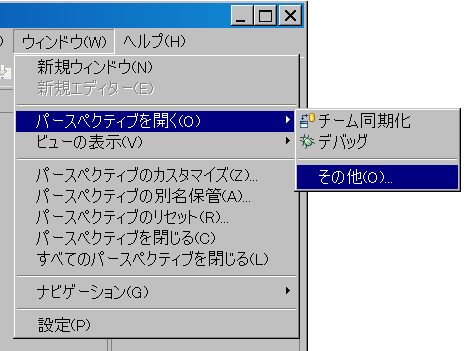
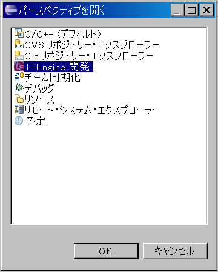

Eclipse を使って開発を行うために、まず、作業環境である「ワークスペース」を作成します。
(1) デスクトップ上の Eclipse のショートカット、または "C:\eclipse" フォルダ内の "eclipse.exe" をダブルクリックしてEclipse を起動します。
(2) しばらくすると「ワークスペースの選択」ダイアログが表示されますので、Cygwin 上で T-Kernel ソースコードパッケージを展開したディレクトリの Windows から見たパスを指定して、「OK」ボタンを押してください。
ワークスペースの選択 C:\cygwin\usr\local\tef_em1d\tkernel_source(3) T-Kernel 開発用の新しいワークスペースが生成され、「ようこそ」画面が表示されます。
(4) 次に、「ようこそ」画面の右端にある「ワークベンチ」のアイコンをクリックし、「ワークベンチ」を表示します。
(5) メニューの「ウインドウ」→「パースペクティブを開く」→「その他」→「T-Engine 開発」を選択します。
 
(6) ウィンドウ右上のパースペクティブ表示に「T-Engine 開発」と表示されます。
次に、ワークスペースの環境設定を行います。
(1) メニューの「ウインドウ」→「設定」を選択し、「設定」ダイアログを表示します。
(2) このダイアログの左側の袖に出ている「T-Engine 開発環境」をクリックして、以下の設定を確認してください。
T-Engine 開発環境
Cygwin ディレクトリ C:\CygwinCygwin をインストールしたパスを指定します。Cygwin を標準とは異なる場所にインストールした場合は変更してください。
外部ツール: te_vcom
ロケーション ${te_plugin_loc:COMMON}\te\tool\Cygwin-i686\etc\te_vcom.exe
引数 -115200 -x -l /dev/ttyS0デフォルトのままで変更は不要です。
外部ツール: gterm
ロケーション ${te_plugin_loc:COMMON}\te\tool\Cygwin-i686\etc\gterm.exe
引数 -i -s -e -lte_vcomデフォルトのままで変更は不要です。
外部ツールの設定はレジストリに記録されるため、同一ユーザ内で共通に使用され、本開発環境を再インストールしても保存されています。
「設定」ダイアログの左側の袖に出ている「T-Engine開発環境」の左側の [+] マークをクリックして、下に表示される「tef_em1d.1.1.2」をクリックして、以下の環境変数の設定を確認してください。
環境変数
| 変数名 | 値 |
|---|---|
| BD | \usr\local\tef_em1d\tkernel_source |
| GNU_BD | \local\tef_em1d\tool\Cygwin-i686 |
| GNUARM_2 | \usr\local\tef_em1d\tool\Cygwin-i686\arm_2-unknown-tkernel |
GNU 開発環境を標準とは異なる場所にインストールした場合は、"\usr\local\tef_em1d" の部分をインストールしたパス名に変更してください。
他の環境変数はデフォルトのままで変更は不要です。
Eclipse では「プロジェクト」という単位でプログラムを管理しますので、システムのビルド(コンパイル/リンク)、デバッグ、ファイル操作などを行うためには、プロジェクトを作成する必要があります。
(1) Eclipse のウィンドウの左袖に表示されている「C/C++プロジェクト」ビュー上で、マウスの右ボタンをクリックし、その際に表示されるメニューの「新規」→「T-Engine C/C++プロジェクト」を選択します。
(2) 「新規プロジェクト」のダイアログが表示されますので、以下のプロジェクトを作成してください。テンプレート、および出力ディレクトリは何も設定せずにそのままとしてください。
プロジェクト名 kernel
ロケーション C:\cygwin\usr\local\tef_em1d\tkernel_source\kernel
ターゲット tef_em1d.1.1.2
プログラムタイプ Kernel「T-Engine C/C++プロジェクト」では、プロジェクトのロケーションは、ワークスペース内のプロジェクト名のサブディレクトリに自動的に設定されます。
上記の "kernel" プロジェクトのみで、T-Kernel システムのビルドは可能ですが、kernel サブディレクトリ以外にあるファイルを閲覧/編集することができません。必要に応じて、他のサブディレクトリに対応するプロジェクトも作成してください。
例: プロジェクト名 include
ロケーション C:\cygwin\usr\local\tef_em1d\tkernel_source\include
ターゲット tef_em1d.1.1.2
プログラムタイプ Library (何を指定してもよい)(3) 作成したプロジェクトは、Eclipse のウィンドウの左袖に表示されている「C/C++プロジェクト」のビューに表示されます。
次に、実際に make を実行するプロジェクトのディレクトリに対して,ビルド環境を設定します。
ビルド環境は、Eclipse の T-Kernel 機種別プラグインの名称やバージョンを示す情報であり、tef_em1d 用の現バージョンでは常に「tef_em1d.1.1.2」となります。
Makefile が入っている make を実行するディレクトリをビルド先ディレクトリと呼びます。そこにはビルド結果のオブジェクトが入リます。
(1) Eclipse のウィンドウの左袖に表示されている「C/C++プロジェクト」のビューに表示されているディレクトリの左側の [+] のマークをクリックし、下位のディレクトリをたどって、ビルド先ディレクトリを表示します。
(2) 表示されているビルド先ディレクトリの上にマウスを移動し、その上でマウスの右ボタンをクリックして表示されるメニューの一番下にある「プロパティ」を選択して、「プロパティ」ダイアログを表示します。
(3) このダイアログの左側の袖に出ている「T-Engine関連」をクリックして、以下の設定を行ってください。
パス /kernel/sysmain/build/tef_em1d
ビルド環境 tef_em1d.1.1.2
プログラムタイプ kernelパスにビルド先ディレクトリが表示されます。 ビルド先ディレクトリは、何個あっても構いませんが、make を実行するためにはビルド環境の設定が必要です。
例: パス /kernel/sysmain/build/tef_em1d.debug
ビルド環境 tef_em1d.1.1.2
プログラムタイプ kernelEclipse の作業環境を設定すると、ワークスペースのフォルダ、およびプロジェクトのフォルダに、以下の Eclipse の設定ファイル/フォルダが作成されます。
(1) ワークスペースフォルダ
"C:\cygwin\usr\local\tef_em1d\tkernel_source"
フォルダ ".metadata"(2) プロジェクトフォルダ
"C:\cygwin\usr\local\tef_em1d\tkernel_source\kernel" など
フォルダ ".settings"
ファイル ".cproject"
ファイル ".project"これらの設定ファイル/フォルダは変更したり、削除したりしないように注意してください。